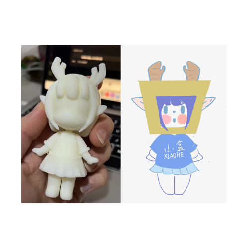

Interaction Design丨 Experience Description of "Simple Clothes Box"
Source of Inspiration
With the rise of fast fashion, Moments, Xiaohongshu, Douyin and other fashionable outfits are swiping the screen,
and what clothes to wear when going out has become a daily worry for everyone.
With the enhancement of people's desire to buy clothes and the expansion of the clothing market, the number of old
clothes discarded every year in the world has reached 50 million tons.
In order to reduce the waste of clothing resources and alleviate people's anxiety about dressing, we
have designed the Simple Clothes Box APP. People will complete a convenient and interesting dressing experience
under the guidance of the dressing assistant box.
Project Description
"Jianyi Box" is a practical APP with business features for smart wear. Users can use the "Simple Clothes Box" to realize the freedom of dressing in limited clothes, and at the same time, they can reduce the waste of clothes and protect the environment.
In the early stage of design, we use creative thinking methods such as brainstorming, reverse thinking, and negative thinking to enrich our design. In addition, we also conducted market research and found that both teenagers and middle-aged people have certain pressure on dressing. People buy a lot of clothes every year, but most of them will not wear them again, which leads to a lot of waste of clothes. From this, we made our user portraits to enrich our design.